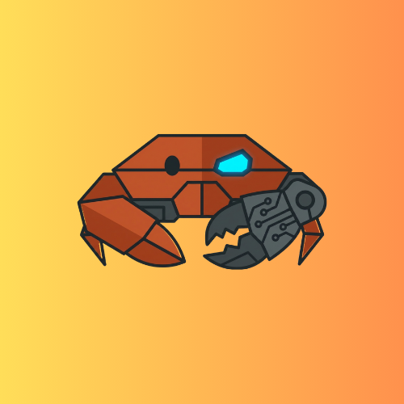

Available for work
Hi, I'm Veljko Milovanović
Full Stack Developer
I am a passionate and dedicated computer engineer with a strong interest in full-stack development and AI technologies.
With a solid foundation in programming from my background with competitive programming and web development, I have successfully contributed to various projects, including a startup that was acquired for $1.8M.
Skills & Technologies
Technologies I work with on a daily basis
Languages
TypeScript
JavaScript
Python
C++
Rust
Java
C#
SQL
Web Development
React
Next.js
Tailwind CSS
FastAPI
Node.js
Remix
Vite
Bun
Infrastructure & DevOps
AWS
Docker
Render
DigitalOcean
Vercel
PostgreSQL
Redis
ML Frameworks
PyTorch
TensorFlow
Hugging Face
LangChain
Featured Personal Projects
A selection of projects I've worked on. Click on any project to learn more.
Featured
Featured
